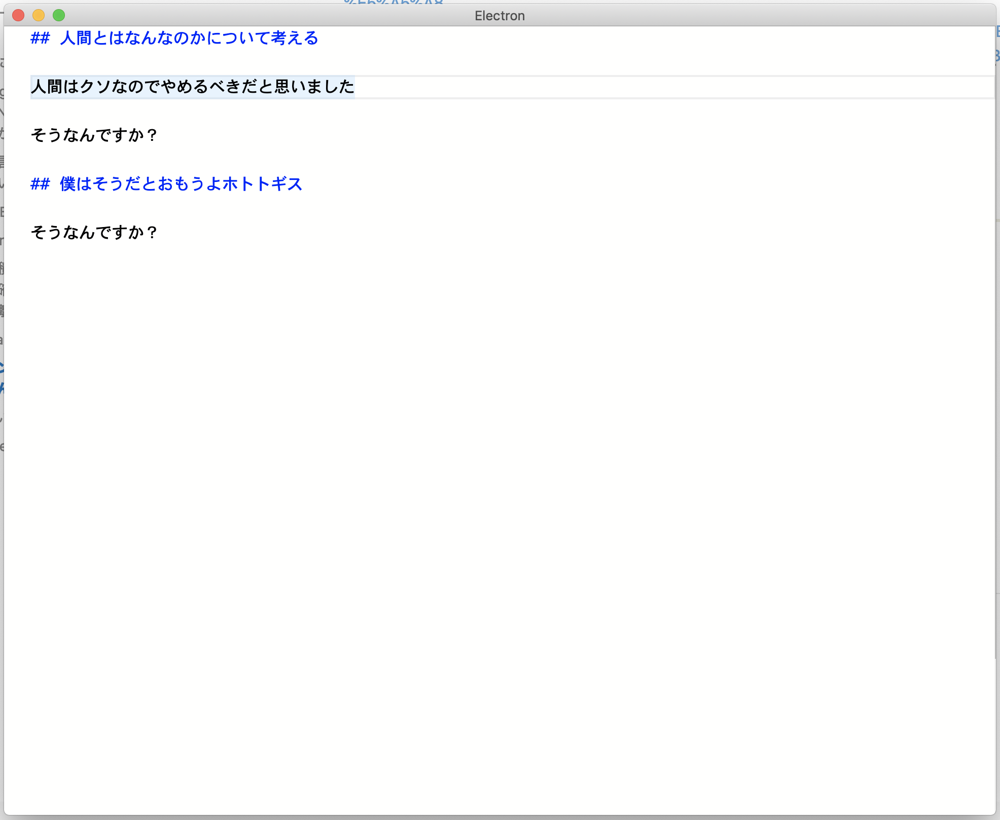

ゴミみたいな自作ツールと生きていく
himanoa 2019/08/22
自己紹介
皆さん！？ゴミみたいなツールを作っていますか？？
皆さん！？ゴミみたいなツールを使っていますか？？
今日話すこと
今使っている自家製ツールの自慢
昔使っていたが今使っていない自家製ツールの話と使わなくなった理由
エターなったツールと理由
反省点
これから
今使っている自家製ツールの自慢
touch_erb
Demo

作った目的
rails gみたいなやつの単一ファイル版がほしかったrailsプロジェクト以外でもscaffoldしたい
久々にRuby書きたくなった
テンプレートの表現は高ければ高いほどいい
自分用なので任意コード実行される問題とかどうでもいい
むしろ任意コード実行できるほうが便利
機能
~/.touch_erb/*.erbを実行してファイルを生成するテンプレート内でファイル名を使うことができる
ActiveSupportを用いることで複数形にしたりできる
ローカルディレクトリ
.touch_erbをサポートプロジェクト固有のテンプレートをサポートしたかった
作った感想と実運用した感想
機能が少ないのでモチベが切れる前に開発完了できた
自分が喉から手がでるほどほしいツールだったので日常的に使えるので機能要望がイメージしやすい
使い始めた結果プロジェクト固有でテンプレートを作りたくなった
昔は使ってたけど今は使ってないツール
nadeshiko
機能群(特徴)
RSSフィードを登録し、購読できること
専用のサーバーサイド実装をしない縛り
クローリングを定期的に実行するがUIスレッドでやりたくない
webworker が YQL APIを叩き表示させる
cache を indexedDBにいれてなんかする
使わなくなった理由
- YQLが突然動かなくなった
- アーキテクチャ設計があまり賢くなかった(React + Redux(redux-saga) + TypeScript)
- Reduxが不用意に物事を複雑化させていた
- 世の中でベストプラクティスだと思われているアーキテクチャも本当にベストプラクティス化はわからない
- コードをいじるモチベーションが消失するとメンテしなくなる
- feedly最高！
ikki
機能群
ただのブログサービス
https://blog.himanoa.net の昔の姿
使わなくなった理由
VPSの料金支払いだるい
Railsがだるい
textareaで本文を書いてたんですけどだるい。
エターなったツールの話
bkmk
機能
ソーシャルブックマーク
ChromeExtensionでブックマークを登録
Firebaseで認証
ブックマーク全文検索
エターなった理由
要求機能が多すぎる
技術スタック
firestoreのローカルエミュレータ越しにセキュリティルールが適切かどうかを検証する
monorepo
Chrome Extension(心を折る原因)
Chrome Extension越しにFirebaseの認証SDKが動かない!?
反省
個人プロダクトでMicroServices的なのを意識しながらコードを書くのやめろ
完成までの道のりが遠のくだけ。モチベが有限
個人開発を成功させるためには
スケーラビリティは考えない
たいてい自分しか使わない
テストは書く。
冒険をするとリファクタリングをしたくなる。
Chrome Extensionをやめろ
小さく始めましょう
仕事でドッグフーディングしましょう。
依存してるプラットフォームが壊れないように祈る
🙏すべては祈り🙏
今後
titan
語る理想
作りたいのはmarkdownメモエディタ
名前の由来はQittaがkobitoを作ったなら俺は巨人を作るッ！！！
見出しジャンプ機能
kibelaへ投稿しやすい機能